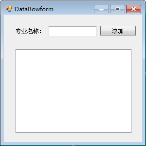
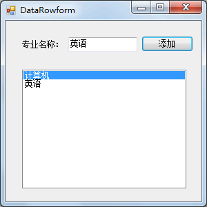

首页 > 编程笔记
C# DataRow和DataColumn：更新数据表
在前面《C# Command》一节中已经介绍了使用 SqlCommand 对象中的 ExecuteNonQuery 方法执行非查询 SQL 语句来实现对数据表的更新操作，使用 DataSet 对象也能实现相同的功能， 并且能节省数据访问时间。
每个 DataSet 都是由多个 DataTable 构成的，更新 DataSet 中的数据实际上是通过更新 DataTable 来实现的。
每个 DataTable 对象都是由行 (DataRow) 和列 (DataColumn) 构成的，下面分别介绍 DataRow 类和 DataColumn 类的使用。
1) DataRow 类
DataRow 类代表数据表中的行，并允许通过该类直接对数据表进行添加、修改、删除行的操作。DataRow 类中常用的属性和方法如下表所示。
| 属性或方法 | 说明 |
|---|---|
| Table | 属性，设置 DataRow 对象所创建 DataTable 的名称 |
| RowState | 属性，获取当前行的状态 |
| HasErrors | 属性，获取当前行是否存在错误 |
| AcceptChanges() | 方法，更新 DataTable 中的值 |
| RejectChanges() | 方法，撤销对 DataTable 中的值的更新 |
| Delete() | 方法，标记当前的行被删除，并在执行 AcceptChanges 方法后更新数据表 |
在 DataRow 类中没有提供构造方法，需要通过 DataTable 中的 NewRow 方法创建 DataRow 类的对象，具体的语句如下。
DataTable dt = new DataTable(); DataRow dr = dt.NewRow();这样，dr 即为新添加的行，每行数据是由多列构成的，如果在 DataTable 对象中已经存在表结构，则直接使用
dr[ 编号或列名 ]= 值的形式即可为表中的列赋值。2) DataColumn 类
DataColumn 类是数据表中的列对象，与数据库中表的列定义一样，都可以为其设置列名以及数据类型。DataColumn类中常用的构造方法如下表所示。
| 构造方法 | 说明 |
|---|---|
| DataColumn() | 无参构造方法 |
| DataColumn(string columnName) | 带参数的构造方法，columnName 参数代表的是列名 |
| DataColumn(string columnName,Type dataType) | 带参数的构造方法，columnName 参数代表的是列名，dataType 参数代表的是列的数据类型 |
DataColumn 类提供了一些属性对 DataColumn 对象进行设置，常用的属性如下表所示。
| 属性 | 说明 |
|---|---|
| ColumnName | 属性，设置 DataColumn 对象的列名 |
| DataType | 属性，设置 DataColumn 对象的数据类型 |
| MaxLength | 属性，设置 DataColumn 对象值的最大长度 |
| Caption | 属性，设置 DataColumn 对象在显示时的列名，类似于给表中的列设置别名 |
| DefaultValue | 属性，设置 DataColumn 对象的默认值 |
| AutoIncrement | 属性，设置 DataColumn 对象为自动增长列，与 SQL Server 中数据表的标识列类似 |
| AutoIncrementSeed | 属性，与 AutoIncrement 属性联用,用于设置自动增长列的初始值 |
| AutoIncrementStep | 属性，与 AutoIncrement 属性联用，用于设置自动增长列每次增加的值 |
| Unique | 属性，设置 DataColumn 对象的值是唯一的，类似于数据表的唯一约束 |
| AllowDBNull | 属性，设置 DataColumn 对象的值是否允许为空 |
下面通过实例来演示 DataRow 类和 DataColumn 类的使用。
【实例】通过 DataRow 类、DataColumn 类以及 DataTable 类设计专业信息表，并向该表中添加专业，在 ListBox 控件中显示所有专业信息。
专业信息表的列包括专业编号、专业名称，要求专业编号是自动增长列，专业名称是唯一值。
创建 Windows 应用程序，添加专业信息并查询的界面设计如下图所示。

在每次新添加专业名称时将新的专业添加到ListBox控件中，实现的代码如下。
public partial class DataRowform : Form
{
//创建DataTable类的对象其表明为major
private DataTable dt = new DataTable("major");
//在构造方法中初始化DataTable对象，设置DataTable 中的列
public DataRowform()
{
InitializeComponent();
//创建专业编号列，列明为id 、数据类型为整型
DataColumn id = new DataColumn("id", typeof(int));
//设置id为自动增长列
id.AutoIncrement = true;
//设置id的初始值
id.AutoIncrementSeed = 1;
//设置id每次增长的值
id.AutoIncrementStep = 1;
//将id列加入到DataTable中
dt.Columns.Add(id);
//创建专业名称列，列明为name，数据类型为字符串类型
DataColumn name = new DataColumn("name", typeof(string));
//设置name列的值是唯一的
name.Unique = true;
//将name列加入到DataTable 对象中
dt.Columns.Add(name);
}
//添加按钮的单击事件
private void button1_Click(object sender, EventArgs e)
{
//向DataTable中天加一行，创建DataRow对象
DataRow dr = dt.NewRow();
//添加专业名称列的值
dr["name"] = textBox1.Text;
//将DataRow添加到DataTable对象中
dt.Rows.Add(dr);
//设置ListBox控件中的DataSource属性
listBox1.DataSource = dt;
//设置在listBox控件中显示的列
listBox1.DisplayMember = dt.Columns["name"].ToString();
}
}
运行该窗体，效果如下图所示。

从上面的运行效果可以看出，DataTable 类的使用与直接设计数据库中的表是类似的，只是没有将数据存储到数据库中。
既然使用 DataTable 类能完成与表设计和操作相同的功能，那么通过更新 DataTable 来更新数据库中的数据表效果会事半功倍，并能在离线状态下保存数据。
关注公众号「站长严长生」，在手机上阅读所有教程，随时随地都能学习。内含一款搜索神器，免费下载全网书籍和视频。

微信扫码关注公众号